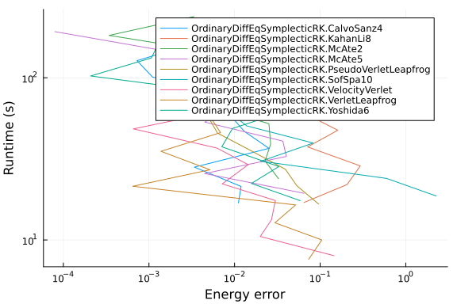
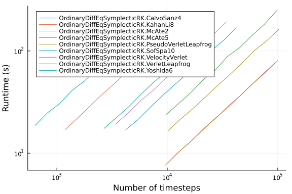
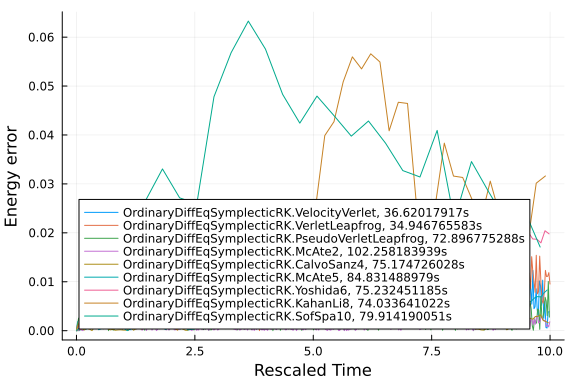
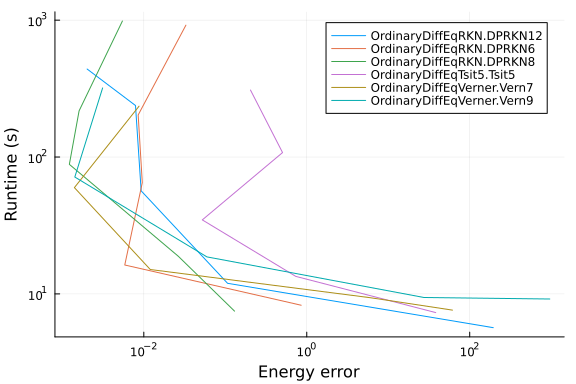
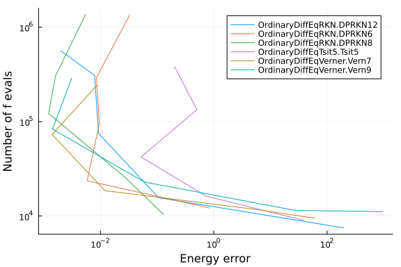
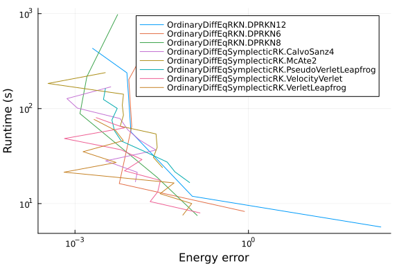

Liquid argon benchmarks
The purpose of these benchmarks is to compare several integrators for use in molecular dynamics simulation. We will use a simulation of liquid argon form the examples of NBodySimulator as test case.
using ProgressLogging
using NBodySimulator, OrdinaryDiffEq, OrdinaryDiffEqRKN, OrdinaryDiffEqSymplecticRK
using StaticArrays
using Plots, DataFrames, StatsPlots
function setup(t)
T = 120.0 # K
kb = 1.38e-23 # J/K
ϵ = T * kb # J
σ = 3.4e-10 # m
ρ = 1374 # kg/m^3
m = 39.95 * 1.6747 * 1e-27 # kg
# N=128 keeps the relative-cost calibration in `c_symplectic`/`c_adaptive`
# below valid (per-step cost ratios are essentially N-independent) while
# keeping CI wall time tractable; the larger N=350 case took >40h per
# parameter sweep under the OrdinaryDiffEq v7 stack.
N = 128
L = (m*N/ρ)^(1/3)
# `CubicPeriodicBoundaryConditions` applies the minimum-image convention,
# which is only valid when the interaction cutoff satisfies R <= L/2.
# At N=128 the box is L = 5.41σ, so the historical R = 3.5σ exceeded
# L/2 = 2.71σ and the pair interactions were wrong. 2.5σ is the standard
# Lennard-Jones cutoff and fits inside this box.
R = 2.5σ
v_dev = sqrt(kb * T / m) # m/s
_L = L / σ
_σ = 1.0
_ϵ = 1.0
_m = 1.0
_v = v_dev / sqrt(ϵ / m)
_R = R / σ
bodies = generate_bodies_in_cell_nodes(N, _m, _v, _L)
lj_parameters = LennardJonesParameters(_ϵ, _σ, _R)
pbc = CubicPeriodicBoundaryConditions(_L)
lj_system = PotentialNBodySystem(bodies, Dict(:lennard_jones => lj_parameters));
simulation = NBodySimulation(lj_system, (0.0, t), pbc, _ϵ/T)
return simulation
endsetup (generic function with 1 method)In order to compare different integrating methods we will consider a fixed simulation time and change the timestep (or tolerances in the case of adaptive methods).
function benchmark(energyerr, rts, bytes, allocs, nt, nf, t, configs)
simulation = setup(t)
prob = SecondOrderODEProblem(simulation)
for config in configs
alg = config.alg
solver_kwargs = Base.structdiff(config, NamedTuple{(:alg,)})
sol, rt,
b,
gc,
memalloc = @timed solve(prob, alg();
save_everystep = false, progress = true, progress_name = "$alg", solver_kwargs...)
result = NBodySimulator.SimulationResult(sol, simulation)
ΔE = total_energy(result, t) - total_energy(result, 0)
energyerr[alg] = ΔE
rts[alg] = rt
bytes[alg] = b
allocs[alg] = memalloc
nt[alg] = sol.stats.naccept
nf[alg] = sol.stats.nf + sol.stats.nf2
end
end
function run_benchmark!(results, t, integrators, tol...; c = ones(length(integrators)))
@progress "Benchmark at t=$t" for τ in zip(tol...)
runtime = Dict()
ΔE = Dict()
nt = Dict()
nf = Dict()
b = Dict()
allocs = Dict()
cfg = config(integrators, c, τ...)
GC.gc()
benchmark(ΔE, runtime, b, allocs, nt, nf, t, cfg)
get_tol(idx) = haskey(cfg[idx], :dt) ? cfg[idx].dt :
(cfg[idx].abstol, cfg[idx].reltol)
for (idx, i) in enumerate(integrators)
push!(results, [
string(i), runtime[i], get_tol(idx)..., abs(ΔE[i]), nt[i], nf[i], c[idx]])
end
end
return results
endrun_benchmark! (generic function with 1 method)We will consider symplectic integrators first
symplectic_integrators = [
VelocityVerlet,
VerletLeapfrog,
PseudoVerletLeapfrog,
McAte2,
CalvoSanz4,
McAte5,
Yoshida6,
KahanLi8,
SofSpa10
];Since for each method there is a different cost for a timestep, we need to take that into account when choosing the tolerances (dts or abstol&reltol) for the solvers. This cost was estimated using the commented code below and the results were hardcoded in order to prevent fluctuations in the results between runs due to differences in calibration times.
The calibration is based on running a simulation with equal tolerances for all solvers and then computing the cost as the runtime / number of timesteps. The absolute value of the cost is not very relevant, so the cost was normalized to the cost of one VelocityVerlet step.
config(integrators, c, τ) = [(alg = a, dt = τ*cₐ) for (a, cₐ) in zip(integrators, c)]
t = 35.0
τs = 1e-3
# warmup
c_symplectic = ones(length(symplectic_integrators))
benchmark(Dict(), Dict(), Dict(), Dict(), Dict(), Dict(), 10.0,
config(symplectic_integrators, c_symplectic, τs))
# results = DataFrame(:integrator=>String[], :runtime=>Float64[], :τ=>Float64[],
# :EnergyError=>Float64[], :timesteps=>Int[], :f_evals=>Int[], :cost=>Float64[]);
# run_benchmark!(results, t, symplectic_integrators, τs)
# c_symplectic .= results[!, :runtime] ./ results[!, :timesteps]
# c_Verlet = c_symplectic[1]
# c_symplectic /= c_Verlet
c_symplectic = [
1.00, # VelocityVerlet
1.05, # VerletLeapfrog
0.98, # PseudoVerletLeapfrog
1.02, # McAte2
2.38, # CalvoSanz4
2.92, # McAte5
3.74, # Yoshida6
8.44, # KahanLi8
15.76 # SofSpa10
]9-element Vector{Float64}:
1.0
1.05
0.98
1.02
2.38
2.92
3.74
8.44
15.76Let us now benchmark the solvers for a fixed simulation time and variable timestep
t = 10.0
τs = 10 .^ range(-4, -3, length = 10)
results = DataFrame(:integrator=>String[], :runtime=>Float64[], :τ=>Float64[],
:EnergyError=>Float64[], :timesteps=>Int[], :f_evals=>Int[], :cost=>Float64[]);
run_benchmark!(results, t, symplectic_integrators, τs, c = c_symplectic)90×7 DataFrame
Row │ integrator runtime τ EnergyError
tim ⋯
│ String Float64 Float64 Float64
Int ⋯
─────┼─────────────────────────────────────────────────────────────────────
─────
1 │ OrdinaryDiffEqSymplecticRK.Veloc… 81.2497 0.0001 0.00232702
⋯
2 │ OrdinaryDiffEqSymplecticRK.Verle… 77.6345 0.000105 0.00213909
3 │ OrdinaryDiffEqSymplecticRK.Pseud… 163.308 9.8e-5 0.00335772
4 │ OrdinaryDiffEqSymplecticRK.McAte2 241.215 0.000102 0.00334536
5 │ OrdinaryDiffEqSymplecticRK.Calvo… 170.74 0.000238 0.00415235
⋯
6 │ OrdinaryDiffEqSymplecticRK.McAte5 193.589 0.000292 7.96513e-5
7 │ OrdinaryDiffEqSymplecticRK.Yoshi… 172.68 0.000374 0.00135281
8 │ OrdinaryDiffEqSymplecticRK.Kahan… 172.996 0.000844 0.025281
⋮ │ ⋮ ⋮ ⋮ ⋮
⋱
84 │ OrdinaryDiffEqSymplecticRK.Pseud… 16.8114 0.00098 0.0960019
⋯
85 │ OrdinaryDiffEqSymplecticRK.McAte2 24.3442 0.00102 0.0326157
86 │ OrdinaryDiffEqSymplecticRK.Calvo… 17.152 0.00238 0.011096
87 │ OrdinaryDiffEqSymplecticRK.McAte5 19.5887 0.00292 0.0648294
88 │ OrdinaryDiffEqSymplecticRK.Yoshi… 17.6389 0.00374 0.0583815
⋯
89 │ OrdinaryDiffEqSymplecticRK.Kahan… 17.198 0.00844 0.0647342
90 │ OrdinaryDiffEqSymplecticRK.SofSp… 18.8726 0.01576 2.26617
3 columns and 75 rows om
ittedThe energy error as a function of runtime is given by
@df results plot(:EnergyError, :runtime, group = :integrator,
xscale = :log10, yscale = :log10, xlabel = "Energy error", ylabel = "Runtime (s)")
Looking at the runtime as a function of timesteps, we can observe that we have a linear dependency for each method, and the slope is the previously computed cost per step.
@df results plot(:timesteps, :runtime, group = :integrator,
xscale = :log10, yscale = :log10, xlabel = "Number of timesteps", ylabel = "Runtime (s)")
We can also look at the energy error history
function benchmark(energyerr, rts, ts, t, configs)
simulation = setup(t)
prob = SecondOrderODEProblem(simulation)
for config in configs
alg = config.alg
solver_kwargs = Base.structdiff(config, NamedTuple{(:alg,)})
sol,
rt = @timed solve(prob, alg(); progress = true, progress_name = "$alg", solver_kwargs...)
result = NBodySimulator.SimulationResult(sol, simulation)
ΔE(t) = total_energy(result, t) - total_energy(result, 0)
energyerr[alg] = [ΔE(t) for t in sol.t[2:(10 ^ 2):end]]
rts[alg] = rt
ts[alg] = sol.t[2:(10 ^ 2):end]
end
end
ΔE = Dict()
rt = Dict()
ts = Dict()
configs = config(symplectic_integrators, c_symplectic, 2.3e-4)
benchmark(ΔE, rt, ts, 10.0, configs)
plt = plot(xlabel = "Rescaled Time", ylabel = "Energy error", legend = :bottomleft);
for c in configs
plot!(plt, ts[c.alg], abs.(ΔE[c.alg]), label = "$(c.alg), $(rt[c.alg])s")
end
plt
Now, let us compare some adaptive methods
adaptive_integrators=[
# Non-stiff ODE methods
Tsit5,
Vern7,
Vern9,
# DPRKN
DPRKN6,
DPRKN8,
DPRKN12
];Similarly to the case of symplectic methods, we will take into account the average cost per timestep in order to have a fair comparison between the solvers.
A note on the tolerance range. The Lennard-Jones potential used here is truncated at R and not shifted or smoothed, so the acceleration is discontinuous every time a pair of particles crosses the cutoff radius. An adaptive error controller cannot integrate through those jumps: below roughly reltol = 1e-7 the majority of the proposed steps are rejected at cutoff crossings, the accepted step size collapses, and the cost diverges. Measured here (N=128, t=10, one solve of Tsit5, extrapolated from a step-capped run):
reltol | runtime for t = 10 |
|---|---|
| 1.2e-13 | 2260 s |
| 1.2e-10 | 1080 s |
| 1.2e-09 | 340 s |
| 1.2e-08 | 165 s |
| 1.2e-07 | 66 s |
| 1.2e-06 | 23 s |
| 1.2e-05 | 9 s |
| 1.2e-04 | 5 s |
The loose end of the old grid is dangerous for a different reason: with abstol = reltol = at*2^cₐ the high-order solvers get a tolerance up to 2^11.38 = 2666 times looser than the grid point, and at that point they stop solving the problem at all. In the last successfully published build of this benchmark Vern9 at reltol = 0.267 took 55389 s (15.4 h) for a single configuration, for an energy error of 325 – i.e. no usable answer. That configuration reproduces on current versions.
So the historical 10 .^ range(-14, -4, length = 10) grid spent essentially all of its wall time outside the range where the error controller works, at both ends. We use a grid that stays inside it.
function config(integrators, c, at, rt)
[(alg = a, abstol = at*2^cₐ, reltol = rt*2^cₐ) for (a, cₐ) in zip(integrators, c)]
end
t = 35.0
ats = 10 .^ range(-9, -5, length = 5)
rts = 10 .^ range(-9, -5, length = 5)
# warmup -- this only exists to force compilation, so it runs at the *loosest*
# tolerance of the grid. It used to use `ats[1]`/`rts[1]`, i.e. the tightest,
# which made the warmup alone more expensive than the whole sweep below.
c_adaptive = ones(length(adaptive_integrators))
benchmark(Dict(), Dict(), Dict(), Dict(), Dict(), Dict(), 10.0,
config(adaptive_integrators, 1, ats[end], rts[end]))
# results = DataFrame(:integrator=>String[], :runtime=>Float64[], :abstol=>Float64[],
# :reltol=>Float64[], :EnergyError=>Float64[], :timesteps=>Int[], :f_evals=>Int[], :cost=>Float64[]);
# run_benchmark!(results, t, adaptive_integrators, ats[1], rts[1])
# c_adaptive .= results[!, :runtime] ./ results[!, :timesteps]
# c_adaptive /= c_Verlet
c_adaptive = [
3.55, # Tsit5,
7.84, # Vern7,
11.38, # Vern9
3.56, # DPRKN6,
5.10, # DPRKN8,
8.85 # DPRKN12,
]6-element Vector{Float64}:
3.55
7.84
11.38
3.56
5.1
8.85Let us now benchmark the solvers for a fixed simulation time and variable timestep
t = 10.0
results = DataFrame(:integrator=>String[], :runtime=>Float64[], :abstol=>Float64[],
:reltol=>Float64[], :EnergyError=>Float64[], :timesteps=>Int[], :f_evals=>Int[], :cost=>Float64[]);
run_benchmark!(results, t, adaptive_integrators, ats, rts, c = c_adaptive)30×8 DataFrame
Row │ integrator runtime abstol reltol Ene
rgy ⋯
│ String Float64 Float64 Float64 Flo
at6 ⋯
─────┼─────────────────────────────────────────────────────────────────────
─────
1 │ OrdinaryDiffEqTsit5.Tsit5 311.415 1.17127e-8 1.17127e-8 0
.20 ⋯
2 │ OrdinaryDiffEqVerner.Vern7 238.067 2.29126e-7 2.29126e-7 0
.00
3 │ OrdinaryDiffEqVerner.Vern9 320.873 2.66515e-6 2.66515e-6 0
.00
4 │ OrdinaryDiffEqRKN.DPRKN6 931.021 1.17942e-8 1.17942e-8 0
.03
5 │ OrdinaryDiffEqRKN.DPRKN8 995.65 3.42968e-8 3.42968e-8 0
.00 ⋯
6 │ OrdinaryDiffEqRKN.DPRKN12 442.838 4.6144e-7 4.6144e-7 0
.00
7 │ OrdinaryDiffEqTsit5.Tsit5 108.514 1.17127e-7 1.17127e-7 0
.50
8 │ OrdinaryDiffEqVerner.Vern7 62.2898 2.29126e-6 2.29126e-6 0
.00
⋮ │ ⋮ ⋮ ⋮ ⋮
⋮ ⋱
24 │ OrdinaryDiffEqRKN.DPRKN12 12.0668 0.00046144 0.00046144 0
.10 ⋯
25 │ OrdinaryDiffEqTsit5.Tsit5 7.38286 0.000117127 0.000117127 38
.27
26 │ OrdinaryDiffEqVerner.Vern7 7.70396 0.00229126 0.00229126 61
.42
27 │ OrdinaryDiffEqVerner.Vern9 9.25877 0.0266515 0.0266515 960
.91
28 │ OrdinaryDiffEqRKN.DPRKN6 8.35566 0.000117942 0.000117942 0
.85 ⋯
29 │ OrdinaryDiffEqRKN.DPRKN8 7.57943 0.000342968 0.000342968 0
.12
30 │ OrdinaryDiffEqRKN.DPRKN12 5.72634 0.0046144 0.0046144 194
.54
4 columns and 15 rows om
ittedThe energy error as a function of runtime is given by
@df results plot(:EnergyError, :runtime, group = :integrator,
xscale = :log10, yscale = :log10, xlabel = "Energy error", ylabel = "Runtime (s)")
If we consider the number of function evaluations instead, we obtain
@df results plot(:EnergyError, :f_evals, group = :integrator,
xscale = :log10, yscale = :log10, xlabel = "Energy error", ylabel = "Number of f evals")
We will now compare the best performing solvers
t = 10.0
symplectic_integrators = [
VelocityVerlet,
VerletLeapfrog,
PseudoVerletLeapfrog,
McAte2,
CalvoSanz4
]
c_symplectic = [
1.00, # VelocityVerlet
1.05, # VerletLeapfrog
0.98, # PseudoVerletLeapfrog
1.02, # McAte2
2.38 # CalvoSanz4
]
results1 = DataFrame(:integrator=>String[], :runtime=>Float64[], :τ=>Float64[],
:EnergyError=>Float64[], :timesteps=>Int[], :f_evals=>Int[], :cost=>Float64[]);
run_benchmark!(results1, t, symplectic_integrators, τs, c = c_symplectic)
adaptive_integrators=[
DPRKN6,
DPRKN8,
DPRKN12
]
c_adaptive = [
3.56, # DPRKN6,
5.10, # DPRKN8,
8.85 # DPRKN12,
]
results2 = DataFrame(:integrator=>String[], :runtime=>Float64[], :abstol=>Float64[],
:reltol=>Float64[], :EnergyError=>Float64[], :timesteps=>Int[], :f_evals=>Int[], :cost=>Float64[]);
run_benchmark!(results2, t, adaptive_integrators, ats, rts, c = c_adaptive)
append!(results1, results2, cols = :union)
results165×9 DataFrame
Row │ integrator runtime τ Ene
rgy ⋯
│ String Float64 Float64? Flo
at6 ⋯
─────┼─────────────────────────────────────────────────────────────────────
─────
1 │ OrdinaryDiffEqSymplecticRK.Veloc… 81.3186 0.0001 0
.00 ⋯
2 │ OrdinaryDiffEqSymplecticRK.Verle… 77.7053 0.000105 0
.00
3 │ OrdinaryDiffEqSymplecticRK.Pseud… 163.829 9.8e-5 0
.00
4 │ OrdinaryDiffEqSymplecticRK.McAte2 241.134 0.000102 0
.00
5 │ OrdinaryDiffEqSymplecticRK.Calvo… 170.681 0.000238 0
.00 ⋯
6 │ OrdinaryDiffEqSymplecticRK.Veloc… 63.3395 0.000129155 0
.00
7 │ OrdinaryDiffEqSymplecticRK.Verle… 59.404 0.000135613 0
.00
8 │ OrdinaryDiffEqSymplecticRK.Pseud… 126.395 0.000126572 0
.00
⋮ │ ⋮ ⋮ ⋮
⋮ ⋱
59 │ OrdinaryDiffEqRKN.DPRKN12 57.3324 missing 0
.00 ⋯
60 │ OrdinaryDiffEqRKN.DPRKN6 16.4184 missing 0
.00
61 │ OrdinaryDiffEqRKN.DPRKN8 19.0265 missing 0
.02
62 │ OrdinaryDiffEqRKN.DPRKN12 12.1122 missing 0
.10
63 │ OrdinaryDiffEqRKN.DPRKN6 8.34159 missing 0
.85 ⋯
64 │ OrdinaryDiffEqRKN.DPRKN8 7.56388 missing 0
.12
65 │ OrdinaryDiffEqRKN.DPRKN12 5.73518 missing 194
.54
6 columns and 50 rows om
ittedThe energy error as a function of runtime is given by
@df results1 plot(:EnergyError, :runtime, group = :integrator,
xscale = :log10, yscale = :log10, xlabel = "Energy error", ylabel = "Runtime (s)")
Appendix
These benchmarks are a part of the SciMLBenchmarks.jl repository, found at: https://github.com/SciML/SciMLBenchmarks.jl. For more information on high-performance scientific machine learning, check out the SciML Open Source Software Organization https://sciml.ai.
To locally run this benchmark, do the following commands:
using SciMLBenchmarks
SciMLBenchmarks.weave_file("benchmarks/NBodySimulator","liquid_argon.jmd")Computer Information:
Julia Version 1.11.9
Commit 53a02c0720c (2026-02-06 00:27 UTC)
Build Info:
Official https://julialang.org/ release
Platform Info:
OS: Linux (x86_64-linux-gnu)
CPU: 128 × AMD EPYC 7502 32-Core Processor
WORD_SIZE: 64
LLVM: libLLVM-16.0.6 (ORCJIT, znver2)
Threads: 128 default, 0 interactive, 64 GC (on 128 virtual cores)
Environment:
JULIA_NUM_THREADS = auto
Package Information:
Status `~/github-runners/amdci3-1/_work/SciMLBenchmarks.jl/SciMLBenchmarks.jl/benchmarks/NBodySimulator/Project.toml`
[6e4b80f9] BenchmarkTools v1.8.0
[a93c6f00] DataFrames v1.8.2
⌃ [0e6f8da7] NBodySimulator v1.15.0
[1dea7af3] OrdinaryDiffEq v7.7.0
[af6ede74] OrdinaryDiffEqRKN v2.2.0
⌃ [fa646aed] OrdinaryDiffEqSymplecticRK v2.2.1
[91a5bcdd] Plots v1.41.7
[33c8b6b6] ProgressLogging v0.1.6
⌃ [31c91b34] SciMLBenchmarks v0.1.3
[90137ffa] StaticArrays v1.9.19
[f3b207a7] StatsPlots v0.15.8
Info Packages marked with ⌃ have new versions available and may be upgradable.And the full manifest:
Status `~/github-runners/amdci3-1/_work/SciMLBenchmarks.jl/SciMLBenchmarks.jl/benchmarks/NBodySimulator/Manifest.toml`
[47edcb42] ADTypes v1.24.0
[14f7f29c] AMD v0.5.3
[621f4979] AbstractFFTs v1.5.0
[1520ce14] AbstractTrees v0.4.5
[7d9f7c33] Accessors v0.1.45
[79e6a3ab] Adapt v4.7.0
[66dad0bd] AliasTables v1.1.3
[7d9fca2a] Arpack v0.5.4
[4fba245c] ArrayInterface v7.30.0
[13072b0f] AxisAlgorithms v1.1.0
[6e4b80f9] BenchmarkTools v1.8.0
[b2a6c25c] BinaryHeaps v1.1.0
[d1d4a3ce] BitFlags v0.1.10
⌃ [70df07ce] BracketingNonlinearSolve v1.12.5
[d360d2e6] ChainRulesCore v1.26.1
[aaaa29a8] Clustering v0.15.8
[944b1d66] CodecZlib v0.7.9
[35d6a980] ColorSchemes v3.31.0
[3da002f7] ColorTypes v0.12.1
[c3611d14] ColorVectorSpace v0.11.0
[5ae59095] Colors v0.13.1
[38540f10] CommonSolve v0.2.14
[bbf7d656] CommonSubexpressions v0.3.1
[34da2185] Compat v4.18.1
[a33af91c] CompositionsBase v0.1.2
[2569d6c7] ConcreteStructs v0.2.8
[f0e56b4a] ConcurrentUtilities v2.6.0
[8f4d0f93] Conda v1.10.3
[187b0558] ConstructionBase v1.6.0
[d38c429a] Contour v0.6.3
[a8cc5b0e] Crayons v4.2.0
[9a962f9c] DataAPI v1.16.0
[a93c6f00] DataFrames v1.8.2
[864edb3b] DataStructures v0.19.6
[e2d170a0] DataValueInterfaces v1.0.0
[8bb1440f] DelimitedFiles v1.9.1
[2b5f629d] DiffEqBase v7.18.2
[163ba53b] DiffResults v1.1.0
[b552c78f] DiffRules v1.16.0
[a0c0ee7d] DifferentiationInterface v0.7.21
[b4f34e82] Distances v0.10.12
[31c24e10] Distributions v0.25.131
[ffbed154] DocStringExtensions v0.9.5
[4e289a0a] EnumX v1.0.7
[f151be2c] EnzymeCore v0.8.21
[460bff9d] ExceptionUnwrapping v0.1.11
[e2ba6199] ExprTools v0.1.11
[c87230d0] FFMPEG v0.4.5
[b86e33f2] FFTA v0.3.1
[7034ab61] FastBroadcast v1.4.0
[9aa1b823] FastClosures v0.3.2
[a4df4552] FastPower v1.5.0
[5789e2e9] FileIO v1.20.0
[1a297f60] FillArrays v1.17.0
[64ca27bc] FindFirstFunctions v3.2.1
[6a86dc24] FiniteDiff v2.33.0
⌅ [53c48c17] FixedPointNumbers v0.8.6
[1fa38f19] Format v1.3.7
[f6369f11] ForwardDiff v1.4.5
[069b7b12] FunctionWrappers v1.1.3
[77dc65aa] FunctionWrappersWrappers v1.13.0
[46192b85] GPUArraysCore v0.2.0
⌃ [28b8d3ca] GR v0.73.26
[a0844989] Gamma v1.2.0
[d7ba0133] Git v1.5.0
[42e2da0e] Grisu v1.0.2
⌅ [cd3eb016] HTTP v1.11.0
⌅ [eafb193a] Highlights v0.5.3
[34004b35] HypergeometricFunctions v0.3.30
[7073ff75] IJulia v1.34.4
[842dd82b] InlineStrings v1.4.5
[18e54dd8] IntegerMathUtils v0.1.4
[a98d9a8b] Interpolations v0.16.3
[3587e190] InverseFunctions v0.1.17
[41ab1584] InvertedIndices v1.3.1
[92d709cd] IrrationalConstants v0.2.6
[82899510] IteratorInterfaceExtensions v1.0.0
[1019f520] JLFzf v0.1.11
[692b3bcd] JLLWrappers v1.8.0
⌅ [682c06a0] JSON v0.21.4
[5ab0869b] KernelDensity v0.6.12
[ba0b0d4f] Krylov v0.10.9
[2faa5264] LHLFactorization v2.2.0
[b964fa9f] LaTeXStrings v1.4.1
[23fbe1c1] Latexify v0.16.12
[87fe0de2] LineSearch v0.1.16
⌃ [7ed4a6bd] LinearSolve v5.13.0
[2ab3a3ac] LogExpFunctions v1.0.1
[e6f89c97] LoggingExtras v1.2.0
[1914dd2f] MacroTools v0.5.16
[bb5d69b7] MaybeInplace v0.1.8
[739be429] MbedTLS v1.1.10
[442fdcdd] Measures v0.3.3
[e1d29d7a] Missings v1.2.0
[46d2c3a1] MuladdMacro v0.2.7
[6f286f6a] MultivariateStats v0.10.5
[ffc61752] Mustache v1.0.21
⌃ [0e6f8da7] NBodySimulator v1.15.0
[77ba4419] NaNMath v1.1.4
[b8a86587] NearestNeighbors v0.4.29
[8913a72c] NonlinearSolve v4.28.0
⌃ [be0214bd] NonlinearSolveBase v2.47.0
⌃ [5959db7a] NonlinearSolveFirstOrder v2.4.0
⌃ [9a2c21bd] NonlinearSolveQuasiNewton v1.15.1
⌃ [26075421] NonlinearSolveSpectralMethods v1.8.0
[510215fc] Observables v0.5.5
[6fe1bfb0] OffsetArrays v1.17.0
[4d8831e6] OpenSSL v1.6.1
[bac558e1] OrderedCollections v2.0.1
[1dea7af3] OrdinaryDiffEq v7.7.0
[6ad6398a] OrdinaryDiffEqBDF v2.4.4
⌃ [bbf590c4] OrdinaryDiffEqCore v4.15.0
[50262376] OrdinaryDiffEqDefault v2.5.0
[4302a76b] OrdinaryDiffEqDifferentiation v3.10.0
[127b3ac7] OrdinaryDiffEqNonlinearSolve v2.9.0
[af6ede74] OrdinaryDiffEqRKN v2.2.0
[43230ef6] OrdinaryDiffEqRosenbrock v2.7.0
⌃ [b4bd8bb3] OrdinaryDiffEqRosenbrockTableaus v2.4.1
[2d112036] OrdinaryDiffEqSDIRK v2.9.0
⌃ [fa646aed] OrdinaryDiffEqSymplecticRK v2.2.1
⌃ [b1df2697] OrdinaryDiffEqTsit5 v2.1.3
[79d7bb75] OrdinaryDiffEqVerner v2.4.0
[90014a1f] PDMats v0.11.41
⌅ [69de0a69] Parsers v2.8.7
[ccf2f8ad] PlotThemes v3.3.0
[995b91a9] PlotUtils v1.4.4
[91a5bcdd] Plots v1.41.7
[2dfb63ee] PooledArrays v1.4.3
[d236fae5] PreallocationTools v1.6.0
⌅ [aea7be01] PrecompileTools v1.2.1
[21216c6a] Preferences v1.5.2
[08abe8d2] PrettyTables v3.4.8
[27ebfcd6] Primes v0.5.7
[33c8b6b6] ProgressLogging v0.1.6
[43287f4e] PtrArrays v1.4.0
[0c0d3e7f] PureKLU v1.4.1
[1fd47b50] QuadGK v2.11.3
[c84ed2f1] Ratios v0.4.5
[3cdcf5f2] RecipesBase v1.3.4
[01d81517] RecipesPipeline v0.6.12
[731186ca] RecursiveArrayTools v4.5.0
[189a3867] Reexport v1.2.2
[05181044] RelocatableFolders v1.0.1
[ae029012] Requires v1.3.1
[9fe22ead] RespecializeParams v1.3.0
[79098fc4] Rmath v0.9.0
[f2b01f46] Roots v3.0.7
[7e49a35a] RuntimeGeneratedFunctions v0.5.25
[0bca4576] SciMLBase v3.49.2
⌃ [31c91b34] SciMLBenchmarks v0.1.3
⌃ [19f34311] SciMLJacobianOperators v0.1.17
[a6db7da4] SciMLLogging v2.1.0
[c0aeaf25] SciMLOperators v1.29.0
[431bcebd] SciMLPublic v1.3.0
⌃ [53ae85a6] SciMLStructures v1.10.4
[6c6a2e73] Scratch v1.3.0
[91c51154] SentinelArrays v1.4.10
[efcf1570] Setfield v1.1.2
[992d4aef] Showoff v1.0.3
[777ac1f9] SimpleBufferStream v1.2.0
⌃ [727e6d20] SimpleNonlinearSolve v2.14.0
[a2af1166] SortingAlgorithms v1.2.3
[a57abbd0] SparseColumnPivotedQR v2.1.7
[0a514795] SparseMatrixColorings v0.4.27
[276daf66] SpecialFunctions v2.9.0
[860ef19b] StableRNGs v1.0.4
[90137ffa] StaticArrays v1.9.19
[1e83bf80] StaticArraysCore v1.4.4
[10745b16] Statistics v1.11.1
[82ae8749] StatsAPI v1.8.0
[2913bbd2] StatsBase v0.34.13
[4c63d2b9] StatsFuns v2.2.1
[f3b207a7] StatsPlots v0.15.8
[69024149] StringEncodings v0.3.7
[892a3eda] StringManipulation v0.5.0
[2efcf032] SymbolicIndexingInterface v0.3.55
[ab02a1b2] TableOperations v1.2.0
[3783bdb8] TableTraits v1.0.1
[bd369af6] Tables v1.14.0
[62fd8b95] TensorCore v0.1.1
[a759f4b9] TimerOutputs v1.2.0
[3bb67fe8] TranscodingStreams v0.11.3
[781d530d] TruncatedStacktraces v1.4.0
[5c2747f8] URIs v1.7.0
[1cfade01] UnicodeFun v0.4.1
[41fe7b60] Unzip v0.2.0
[81def892] VersionParsing v1.3.0
[44d3d7a6] Weave v0.10.12
[cc8bc4a8] Widgets v0.6.8
[efce3f68] WoodburyMatrices v1.1.0
[ddb6d928] YAML v0.4.16
[c2297ded] ZMQ v1.5.1
⌅ [68821587] Arpack_jll v3.5.2+0
[6e34b625] Bzip2_jll v1.0.9+0
[83423d85] Cairo_jll v1.18.7+0
[ee1fde0b] Dbus_jll v1.16.2+0
[2702e6a9] EpollShim_jll v0.0.20230411+1
[2e619515] Expat_jll v2.8.3+0
⌅ [b22a6f82] FFMPEG_jll v8.1.2+0
[a3f928ae] Fontconfig_jll v2.17.1+0
[d7e528f0] FreeType2_jll v2.14.3+1
[559328eb] FriBidi_jll v1.0.17+0
⌃ [0656b61e] GLFW_jll v3.4.1+1
⌅ [d2c73de3] GR_jll v0.73.26+0
⌅ [b0724c58] GettextRuntime_jll v0.22.4+0
[61579ee1] Ghostscript_jll v9.55.1+0
[020c3dae] Git_LFS_jll v3.7.1+0
[f8c6e375] Git_jll v2.55.0+0
[7746bdde] Glib_jll v2.88.3+0
[3b182d85] Graphite2_jll v1.3.16+0
⌅ [2e76f6c2] HarfBuzz_jll v8.5.1+0
[1d5cc7b8] IntelOpenMP_jll v2025.2.0+0
[aacddb02] JpegTurbo_jll v3.2.0+1
[c1c5ebd0] LAME_jll v3.100.3+0
[88015f11] LERC_jll v4.1.0+0
[1d63c593] LLVMOpenMP_jll v22.1.7+0
⌅ [e9f186c6] Libffi_jll v3.4.7+0
[7e76a0d4] Libglvnd_jll v1.7.1+1
[94ce4f54] Libiconv_jll v1.18.0+0
[4b2f31a3] Libmount_jll v2.42.0+0
[89763e89] Libtiff_jll v4.7.3+0
[38a345b3] Libuuid_jll v2.42.0+0
[856f044c] MKL_jll v2025.2.0+0
[e7412a2a] Ogg_jll v1.3.6+0
[9bd350c2] OpenSSH_jll v10.5.1+0
[458c3c95] OpenSSL_jll v3.5.7+0
[efe28fd5] OpenSpecFun_jll v0.5.6+0
[91d4177d] Opus_jll v1.6.1+0
[36c8627f] Pango_jll v1.58.0+0
[30392449] Pixman_jll v0.46.4+0
[c0090381] Qt6Base_jll v6.10.2+2
[629bc702] Qt6Declarative_jll v6.10.2+2
[ce943373] Qt6ShaderTools_jll v6.10.2+1
[6de9746b] Qt6Svg_jll v6.10.2+0
[e99dba38] Qt6Wayland_jll v6.10.2+1
[f50d1b31] Rmath_jll v0.5.2+0
[a44049a8] Vulkan_Loader_jll v1.3.243+0
[a2964d1f] Wayland_jll v1.24.0+0
[ffd25f8a] XZ_jll v5.8.3+0
[f67eecfb] Xorg_libICE_jll v1.1.2+0
[c834827a] Xorg_libSM_jll v1.2.6+0
[4f6342f7] Xorg_libX11_jll v1.8.13+0
[0c0b7dd1] Xorg_libXau_jll v1.0.13+0
[935fb764] Xorg_libXcursor_jll v1.2.4+0
[a3789734] Xorg_libXdmcp_jll v1.1.6+0
[1082639a] Xorg_libXext_jll v1.3.8+0
[d091e8ba] Xorg_libXfixes_jll v6.0.2+0
[a51aa0fd] Xorg_libXi_jll v1.8.4+0
[d1454406] Xorg_libXinerama_jll v1.1.7+0
[ec84b674] Xorg_libXrandr_jll v1.5.6+0
[ea2f1a96] Xorg_libXrender_jll v0.9.12+0
[a65dc6b1] Xorg_libpciaccess_jll v0.19.0+0
[c7cfdc94] Xorg_libxcb_jll v1.17.1+0
[cc61e674] Xorg_libxkbfile_jll v1.2.0+0
[e920d4aa] Xorg_xcb_util_cursor_jll v0.1.6+0
[12413925] Xorg_xcb_util_image_jll v0.4.1+0
[2def613f] Xorg_xcb_util_jll v0.4.1+0
[975044d2] Xorg_xcb_util_keysyms_jll v0.4.1+0
[0d47668e] Xorg_xcb_util_renderutil_jll v0.3.10+0
[c22f9ab0] Xorg_xcb_util_wm_jll v0.4.2+0
[35661453] Xorg_xkbcomp_jll v1.4.7+0
[33bec58e] Xorg_xkeyboard_config_jll v2.47.0+2
[c5fb5394] Xorg_xtrans_jll v1.6.0+0
[8f1865be] ZeroMQ_jll v4.3.6+0
[3161d3a3] Zstd_jll v1.5.7+1
[35ca27e7] eudev_jll v3.2.14+0
⌅ [214eeab7] fzf_jll v0.61.1+0
[a4ae2306] libaom_jll v3.14.1+0
[0ac62f75] libass_jll v0.17.4+0
[1183f4f0] libdecor_jll v0.2.2+0
[8e53e030] libdrm_jll v2.4.134+0
[2db6ffa8] libevdev_jll v1.13.4+0
[f638f0a6] libfdk_aac_jll v2.0.4+0
[36db933b] libinput_jll v1.28.1+0
[b53b4c65] libpng_jll v1.6.58+0
[a9144af2] libsodium_jll v1.0.21+0
[9a156e7d] libva_jll v2.23.0+0
[f27f6e37] libvorbis_jll v1.3.8+0
[009596ad] mtdev_jll v1.1.7+0
[1317d2d5] oneTBB_jll v2022.3.0+0
⌅ [1270edf5] x264_jll v10164.0.1+0
[dfaa095f] x265_jll v4.1.0+0
[d8fb68d0] xkbcommon_jll v1.13.0+0
[0dad84c5] ArgTools v1.1.2
[56f22d72] Artifacts v1.11.0
[2a0f44e3] Base64 v1.11.0
[ade2ca70] Dates v1.11.0
[8ba89e20] Distributed v1.11.0
[f43a241f] Downloads v1.6.0
[7b1f6079] FileWatching v1.11.0
[9fa8497b] Future v1.11.0
[b77e0a4c] InteractiveUtils v1.11.0
[4af54fe1] LazyArtifacts v1.11.0
[b27032c2] LibCURL v0.6.4
[76f85450] LibGit2 v1.11.0
[8f399da3] Libdl v1.11.0
[37e2e46d] LinearAlgebra v1.11.0
[56ddb016] Logging v1.11.0
[d6f4376e] Markdown v1.11.0
[a63ad114] Mmap v1.11.0
[ca575930] NetworkOptions v1.2.0
[44cfe95a] Pkg v1.11.0
[de0858da] Printf v1.11.0
[9abbd945] Profile v1.11.0
[3fa0cd96] REPL v1.11.0
[9a3f8284] Random v1.11.0
[ea8e919c] SHA v0.7.0
[9e88b42a] Serialization v1.11.0
[1a1011a3] SharedArrays v1.11.0
[6462fe0b] Sockets v1.11.0
[2f01184e] SparseArrays v1.11.0
[f489334b] StyledStrings v1.11.0
[4607b0f0] SuiteSparse
[fa267f1f] TOML v1.0.3
[a4e569a6] Tar v1.10.0
[8dfed614] Test v1.11.0
[cf7118a7] UUIDs v1.11.0
[4ec0a83e] Unicode v1.11.0
[e66e0078] CompilerSupportLibraries_jll v1.1.1+0
[deac9b47] LibCURL_jll v8.6.0+0
[e37daf67] LibGit2_jll v1.7.2+0
[29816b5a] LibSSH2_jll v1.11.0+1
[c8ffd9c3] MbedTLS_jll v2.28.6+0
[14a3606d] MozillaCACerts_jll v2023.12.12
[4536629a] OpenBLAS_jll v0.3.27+1
[05823500] OpenLibm_jll v0.8.5+0
[efcefdf7] PCRE2_jll v10.42.0+1
[bea87d4a] SuiteSparse_jll v7.7.0+0
[83775a58] Zlib_jll v1.2.13+1
[8e850b90] libblastrampoline_jll v5.11.0+0
[8e850ede] nghttp2_jll v1.59.0+0
[3f19e933] p7zip_jll v17.4.0+2
Info Packages marked with ⌃ and ⌅ have new versions available. Those with ⌃ may be upgradable, but those with ⌅ are restricted by compatibility constraints from upgrading. To see why use `status --outdated -m`